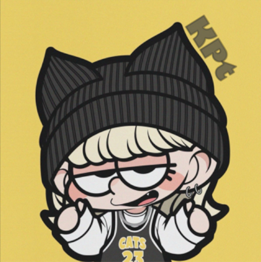
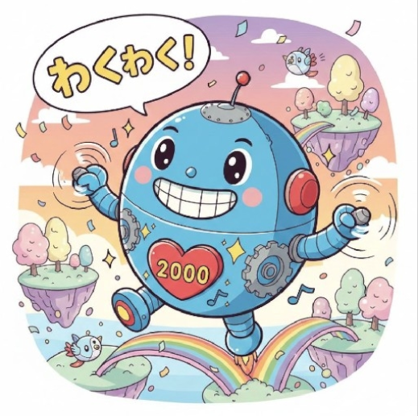
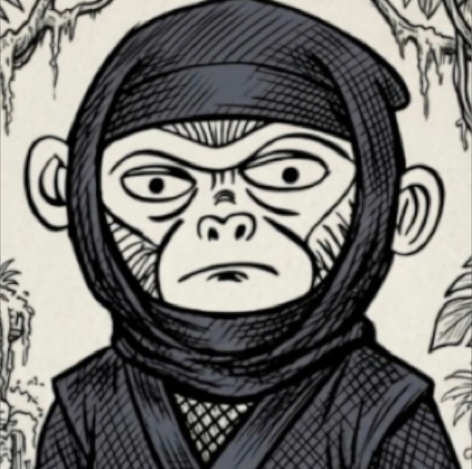
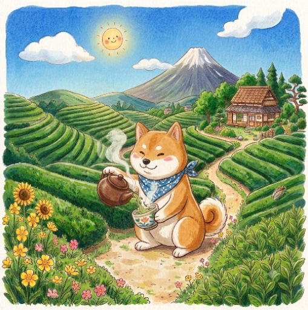
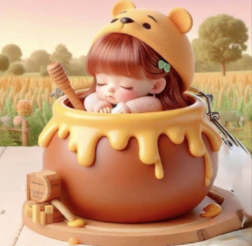
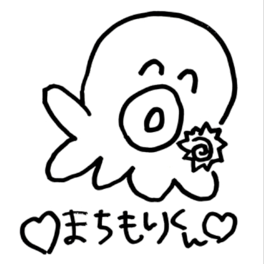
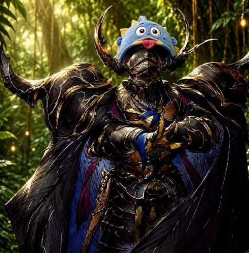
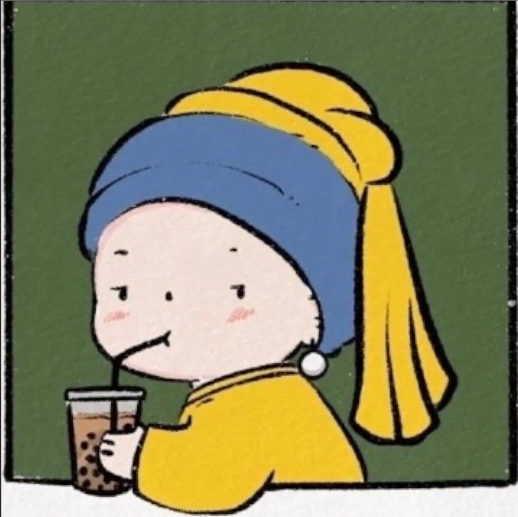

KPt図鑑
produced by つばめ🥷

🔥ポジティブと行動力の匠
✨スキル
- KPT貴重なギャル属性🌟
- 明るさバフ常時発動🌈
- 協力依頼への即対応力🐆
🥷つばめ観察日記
KPTに舞い降りた太陽系ギャル☀️いつも前向きで、何事にも快く協力してくれる頼れる存在😊✨たまにテンパる姿も含めて愛される、連盟の明るいムードメーカー🌻✨

🔥静かなる戦闘支援の匠
✨スキル
- 戦闘本能MAX⚔️
- 静かなる守護力🛡️
- 影から支える観察力👀
🥷つばめ観察日記
多くを語らずとも、行動で支えるKPTの縁の下の戦士🥷💥目立つ場所には出ないけれど、いつも周りを見て必要な時に力を貸してくれる、静かな頼もしさを持つ存在🔥はい、背中で語るタイプです🐺

🔥強さと遊び心の匠
✨スキル
- 安心感あふれる対応力🌱
- 優しさ搭載の戦闘力⚔️
- 実はお茶目発動🤣
🥷つばめ観察日記
強くて優しい、KPTの癒し系戦士🥷落ち着いたやりとりで安心感を届ける一方、実はユーモアの塊👹雪嵐イタズラアイコン事件では、誰にも承認されない伝説を残した🤣いつも助太刀してくれる忍者🤍「😏」はポッチちゃんのトレードマーク

🔥気配りとサポートの匠
✨スキル
- イベント忘却防止センサー📢
- 先回りフォロー力✨
- 困った人への全力支援🤝
🥷つばめ観察日記
いつもKPTを見渡し、必要なことをそっと届けてくれる存在。📋忘れがちなイベントを思い出させ、素敵なアイコンで彩りを添えてくれる🎨困った時に頼れる、優しさあふれるサポーター✨☺️

🍀癒しと礼儀の匠
✨スキル
- 優しさ常時発動🌱
- 丁寧なお礼スキル✨
- カール愛Lv.MAX🧀
🥷つばめ観察日記
誰にでも優しく、自然と周りを和ませるKPTの癒し系(*´ω`*)小さなことにも丁寧に感謝を伝える姿が素敵❤️可愛い顔文字とカール愛で、今日も平和を届ける存在🌸
🔥優しさと漢気の匠
✨スキル
- 静かな守護力🛡️
- タフガイ精神💪
- たまに輩モード発動🤣
🥷つばめ観察日記
普段は穏やかで丁寧、でも芯は熱い漢気の持ち主😎目立つ場所には出ないけれど、しっかり周りを見て支えてくれる😊ゲームでもリアルでも頼られる、KPTのイケメンニキ✨

🔥勝ち筋発見の匠
✨スキル
- 吸収速度MAX🎮
- 効率攻略センス◎⚡
- ミニゲーム上位常連🏆
🥷つばめ観察日記
KPT最年少のキレッキレのブレイン🧠ゲームへの理解力と飲み込みの速さは一級品✨気づけば上位に名を連ねる実力派🏆攻略や効率化で頼りになる、戦略家👨💻

🔥静かな強さと癒しの匠
✨スキル
- 陰から支える援護力🛡️
- 困った人センサー👀
- 丁寧対応スキル✨
🥷つばめ観察日記
普段は穏やかで丁寧、でも戦場では頼れる実力派⚔️いつも周りを見て、必要な時にそっと力を貸してくれる🤝✨たまに寝落ちする姿も含めて、優しさあふれるKPTの守護者✨最近からあげクンのタイムラインサボりがち🤔😂

🤗縁つなぎと包容力の匠
✨スキル
- 全方位フォロー力🤝
- 人を繋ぐコミュ力✨
- 安心感オーラ🍀
🥷つばめ観察日記
誰にでも自然体で寄り添える、KPTのムードメーカー💃🪩人のことをよく見て、困っている人には迷わず手を差し伸べる🤗✨盛り上がってる話題にはすかさずツッコミを入れ、気づけば全員が話している輪の中心に📣豊富な知識の持ち主😉✨
📚戦略資料庫の匠
✨スキル
- KPTデータバンク搭載📚
- 全域マッピング能力🗺️
- 情報整理プロセッサ🧠
🥷つばめ観察日記
KPTが誇る戦略資料庫📁その情報量と管理力はもや別格級👀✨どれだけ多くを支えていても驕らず、いつも低姿勢で仲間に寄り添い、忙しい時でも力を貸してくれる😌強さと優しさを兼ね備えたイクメンパピー✨😎